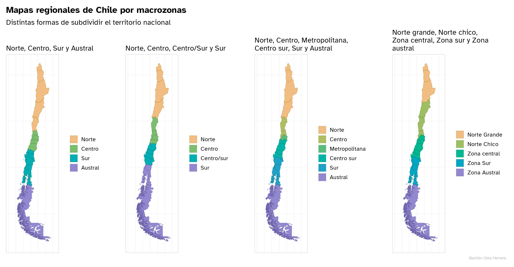

Mapas de las regiones de Chile según macrozonas
9/7/2026
Las macrozonas son grupos de regiones de Chile que agrupan geográficamente a estos territorios. Son similares a las regiones naturales de Chile, solo que éstas no se ajustan a la división político-administriva del país.
En general, las macrozonas de Chile buscan separar al país en clasificaciones aproximadamente parecidas a un norte, centro y sur, tomando distintas definiciones de acuerso a las distintas formas de aproximarse a la especificidad de cada uno de estos conceptos. Por ejemplo, puede ser necesario o relevante separar el norte de Chile en norte grande y norte chico, el sur de chile en zona sur y zona austral, incluir a la Región Metropolitana en el centro del país o considerarla como una macrozona en sí misma, etc.
No existe una sola definición de las macrozonas de Chile, pero varios organismos tienen o han creado clasificaciones regionales geográficas, como el Ministerio de Educación, la Agencia Nacional de Investigación y Desarrollo, la Agencia de Calidad de la Educación, entre otras.
A pesar de no existir consenso, el concepto de macrozona como agrupación geográfica de regiones puede ser útil para analizar datos regionales o comunales de Chile en grupos que respondan a criterios geográficos, climáticos, culturales, de zonas extremas, y otros.
En esta publicacion veremos cómo clasificar las regiones de Chile en macrozonas, y crearemos mapas que muestran algunas de las agrupaciones posibles.
Mapa regional de Chile
Como hemos visto
en otras publicaciones de este blog,
crear mapas regionales de Chile es sencillo usando el lenguaje R y el
paquete {chilemapas}.
Primero cargamos el paquete, obtenemos los polígonos de las comunas de Chile y las unimos en regiones:
library(chilemapas)
library(dplyr)
mapa_regional <- chilemapas::mapa_comunas |>
generar_regiones() |>
mutate(codigo_region = as.numeric(codigo_region)) |>
st_as_sf()
Publicaciones relacionadas

Agregar macrozonas a las regiones de Chile
Usando el
nuevo paquete de R {territorial}, tenemos la
función agregar_macrozona(), que a partir del código territorial de las regiones (del 1 al 16) agrega las macrozonas a cada región.
Primero instalamos el paquete {territorial}:
# install.packages("pak")
pak::pak("bastianolea/territorial")
Luego usamos la función agregar_macrozona() sobre el código de las regiones para crear la variable nueva:
library(territorial)
mapa_macrozona <- mapa_regional |>
mutate(macrozona = agregar_macrozona(codigo_region, tipo = 1))
Creamos la variable macrozona, que ahora podemos usar para visualizar las regiones del país agrupadas territorialmente. Hagamos una tabla para previsualizarla:
tabla_regiones_macrozona <- mapa_macrozona |>
st_drop_geometry() |>
mutate(nombre_region = territorial::as_nombre_region(codigo_region)) |>
ordenar_regiones() |>
relocate(nombre_region, .before = codigo_region)
| nombre_region | codigo_region | macrozona |
|---|---|---|
| Arica y Parinacota | 15 | Norte |
| Tarapacá | 1 | Norte |
| Antofagasta | 2 | Norte |
| Atacama | 3 | Norte |
| Coquimbo | 4 | Norte |
| Valparaíso | 5 | Centro |
| Metropolitana de Santiago | 13 | Centro |
| Libertador General Bernardo O’Higgins | 6 | Centro |
| Maule | 7 | Centro |
| Ñuble | 16 | Sur |
| Biobío | 8 | Sur |
| La Araucanía | 9 | Sur |
| Los Ríos | 14 | Sur |
| Los Lagos | 10 | Sur |
| Aysén del General Carlos Ibáñez del Campo | 11 | Austral |
| Magallanes y de la Antártica Chilena | 12 | Austral |
Para visualizar el mapa, primero creemos una paleta de colores apropiada para esta visualización, que vaya de un anaranjado nortino a un morado-azulado austral.
Con la función sequential_hcl() creamos 4 colores que van desde el tono 50 al tono 270 (argumento h, en una escala de colores de 0° a 360°), con un leve cambio de brillo (l) entre ellos, y manteniendo la intensidad (c).
library(colorspace)
# escala secuencial de colores para macrozonas
colores <- sequential_hcl(4, h = c(50, 270), l = c(80, 60), c = c(60, 60))
# oscurecer los colores para usarlos como bordes
bordes <- darken(colores, .3)
Con los colores creados, procedemos a visualizar el mapa usando la variable macrozona para pintar cada región.
Ver configuración del tema de los gráficos
library(ggplot2)
theme_set(
theme_light(base_family = "Atkinson Hyperlegible") +
theme(axis.text = element_blank(),
axis.ticks = element_blank()) +
theme(plot.title = element_text(face = "bold"),
plot.subtitle = element_text(vjust = 0),
plot.caption = element_text(color = "grey70", size = 6)) +
theme(panel.grid = element_line(color = "grey95"),
panel.border = element_rect(color = "grey85")) +
theme(legend.key.size = unit(4, "mm"),
legend.title = element_blank(),
legend.key.spacing.y = unit(1, "mm"))
)
mapa_macrozona |>
ggplot() +
aes(fill = macrozona,
color = macrozona) +
geom_sf(linewidth = 0.1) +
coord_sf(xlim = c(-80, -62)) +
scale_fill_manual(values = colores) +
scale_color_manual(values = bordes) +
labs(fill = "Macrozonas", color = "Macrozonas",
title = "Mapa regional de Chile",
subtitle = "Macrozonas norte, centro, sur y austral",
caption = "Bastián Olea Herrera")
Publicaciones relacionadas

Visualizar macrozonas de Chile
Como las macrozonas no son clasificaciones regionales estandarizadas, existen varias propuestas dependiendo de cada caso. La función agregar_macrozona() del
paquete {territorial} tiene 4 tipos distintos de macrozonas para clasificar las regiones de Chile:
mapa_macrozonas <- mapa_regional |>
mutate(macrozona1 = agregar_macrozona(codigo_region, tipo = 1)) |>
mutate(macrozona2 = agregar_macrozona(codigo_region, tipo = 2)) |>
mutate(macrozona3 = agregar_macrozona(codigo_region, tipo = 3)) |>
mutate(macrozona4 = agregar_macrozona(codigo_region, tipo = 4))
Podemos hacer una tabla para revisar las macrozonas disponibles:
tabla_regiones_macrozonas <- mapa_macrozonas |>
st_drop_geometry() |>
mutate(nombre_region = territorial::as_nombre_region(codigo_region)) |>
ordenar_regiones() |>
relocate(nombre_region, .before = codigo_region)
| nombre_region | codigo_region | macrozona1 | macrozona2 | macrozona3 | macrozona4 |
|---|---|---|---|---|---|
| Arica y Parinacota | 15 | Norte | Norte | Norte | Norte Grande |
| Tarapacá | 1 | Norte | Norte | Norte | Norte Grande |
| Antofagasta | 2 | Norte | Norte | Norte | Norte Grande |
| Atacama | 3 | Norte | Norte | Norte | Norte Chico |
| Coquimbo | 4 | Norte | Centro | Centro | Norte Chico |
| Valparaíso | 5 | Centro | Centro | Centro | Norte Chico |
| Metropolitana de Santiago | 13 | Centro | Centro | Metropolitana | Zona central |
| Libertador General Bernardo O’Higgins | 6 | Centro | Centro | Centro sur | Zona central |
| Maule | 7 | Centro | Centro/sur | Centro sur | Zona central |
| Ñuble | 16 | Sur | Centro/sur | Centro sur | Zona central |
| Biobío | 8 | Sur | Centro/sur | Centro sur | Zona central |
| La Araucanía | 9 | Sur | Centro/sur | Sur | Zona Sur |
| Los Ríos | 14 | Sur | Sur | Sur | Zona Sur |
| Los Lagos | 10 | Sur | Sur | Sur | Zona Sur |
| Aysén del General Carlos Ibáñez del Campo | 11 | Austral | Sur | Austral | Zona Austral |
| Magallanes y de la Antártica Chilena | 12 | Austral | Sur | Austral | Zona Austral |
Ahora visualizaremos los 4 tipos de macrozonas de Chile en 4 mapas simultáneos, lo que implica repetir la primera visualización de macrozonas cuatro veces cambiando la columna de macrozona a usar, y ajustando la paleta de colores para dar 4, 5 o 6 colores, dependiendo de cada caso.
Ver código de la visualización de los 4 mapas
library(stringr)
ancho <- c(-78, -65) # ancho de Chile continental
espaciado <- c(0, 6, 0, 6) # arriba, izq, abajo, derecha
# paleta de color para 4 macrozonas
colores4 <- sequential_hcl(4, c = c(60, 60), h = c(50, 270), l = c(80, 60))
bordes4 <- darken(colores4, .3)
mapa1 <- mapa_macrozonas |>
ggplot() +
aes(fill = macrozona1,
color = macrozona1) +
geom_sf(linewidth = 0.1) +
coord_sf(xlim = ancho) +
scale_fill_manual(values = colores4) +
scale_color_manual(values = bordes4) +
labs(subtitle = "Norte, Centro, Sur y Austral") +
theme(plot.margin = unit(espaciado, "mm"))
mapa2 <- mapa_macrozonas |>
ggplot() +
aes(fill = macrozona2,
color = macrozona2) +
geom_sf(linewidth = 0.1) +
coord_sf(xlim = ancho) +
scale_fill_manual(values = colores4) +
scale_color_manual(values = bordes4) +
labs(subtitle = "Norte, Centro, Centro/Sur y Sur") +
theme(plot.margin = unit(espaciado, "mm"))
# paleta de color para 6 macrozonas
colores6 <- sequential_hcl(6, c = c(60, 60), h = c(50, 270), l = c(80, 60))
bordes6 <- darken(colores6, .3)
mapa3 <- mapa_macrozonas |>
ggplot() +
aes(fill = macrozona3,
color = macrozona3) +
geom_sf(linewidth = 0.1) +
coord_sf(xlim = ancho) +
scale_fill_manual(values = colores6) +
scale_color_manual(values = bordes6) +
labs(subtitle = str_wrap("Norte, Centro, Metropolitana, Centro sur, Sur y Austral", 30)) +
theme(plot.margin = unit(espaciado, "mm"))
# paleta de color para 5 macrozonas
colores5 <- sequential_hcl(5, c = c(60, 60), h = c(50, 270), l = c(80, 60))
bordes5 <- darken(colores5, .3)
mapa4 <- mapa_macrozonas |>
ggplot() +
aes(fill = macrozona4,
color = macrozona4) +
geom_sf(linewidth = 0.1) +
coord_sf(xlim = ancho) +
scale_fill_manual(values = colores5) +
scale_color_manual(values = bordes5) +
labs(subtitle = str_wrap("Norte grande, Norte chico, Zona central, Zona sur y Zona austral", 30)) +
theme(plot.margin = unit(espaciado, "mm"))
Ahora unimos los 4 mapas gracias al paquete de R {patchwork}:
library(patchwork)
mapa1 +
mapa2 +
mapa3 +
mapa4 +
plot_layout(nrow = 1) +
plot_annotation(title = "Mapas regionales de Chile por macrozonas",
subtitle = "Distintas formas de subdividir el territorio nacional",
caption = "Bastián Olea Herrera")

Aquí tenemos una visualización de 4 versiones de Chile regional subdividido en 4 formas distintas de agrupar las regiones del país en macrozonas.
¿Conoces más formas de definir macrozonas? Déjame un feature request en el repositorio del paquete, o escríbeme y puedo agregarlas sin problemas.
Publicaciones relacionadas

Publicaciones relacionadas